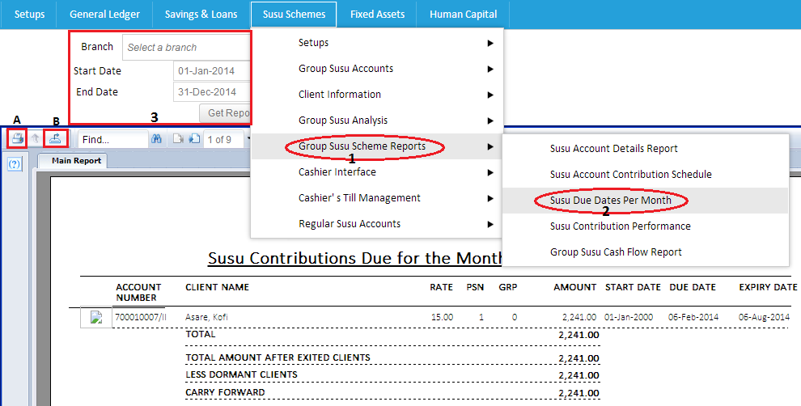

The susu due rates per month can be assessd by first clicking on susu schemes.follow the drop down to group susu scheme reports and locate susu due rates per month.After clicking on it fill the spaces provided such as client's report you want to view,the branch and the period which you want to view report to ie the start date and end date.after which you click on get report to view as shown in the images below.

Created with the Personal Edition of HelpNDoc: Easy to use tool to create HTML Help files and Help web sites